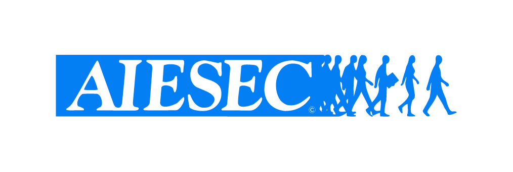

Collection 04
Trainings
Fundamentals, skills, information and innovation. Video tutorials live on my YouTube channel aspashur; written guides and course notes live in the BIOS knowledge hub. Below is where I've taught — and where I've learned.
Latest on the channel
// youtube.com/@aspashurThe four most recent public uploads, pulled live from the channel feed. See all videos →
Learn with me
// tutorials & guidesaspashur on YouTube
GIS, data-science and design walkthroughs — from QGIS basics to visualisation workflows in R.
Subscribe →BIOS Knowledge Hub
Structured notes, references and learning paths for spatial science fundamentals and beyond.
Open BIOS →Institutional Training
Trained 100+ staff and service personnel across the National Statistics System. Click to see the institutions — hover an icon for the topics covered.
See institutions belowInstitutions trained
Hover a logo to see topics trained. The strip flows — hovering pauses it.

Certifications & training received
// 2020 — 2024Professional Certificates — Innovation Management · Effective Report Writing Skills
GSS R Programming Training
Geospatial Analysis and Visualization
Statistics Fundamentals
SDGs Data Modelling and SDMX
Applied Data Science
Machine Learning Using Python
Digital Earth 6-Week Training Program
21-Day Online GIS Training Program using QGIS
Cartography · Spatial Data Science: The New Frontier in Analytics · GRID3 GIS Capacity Development
Want a training for your team?
GIS, data visualisation and data-science capacity building — designed for institutions.